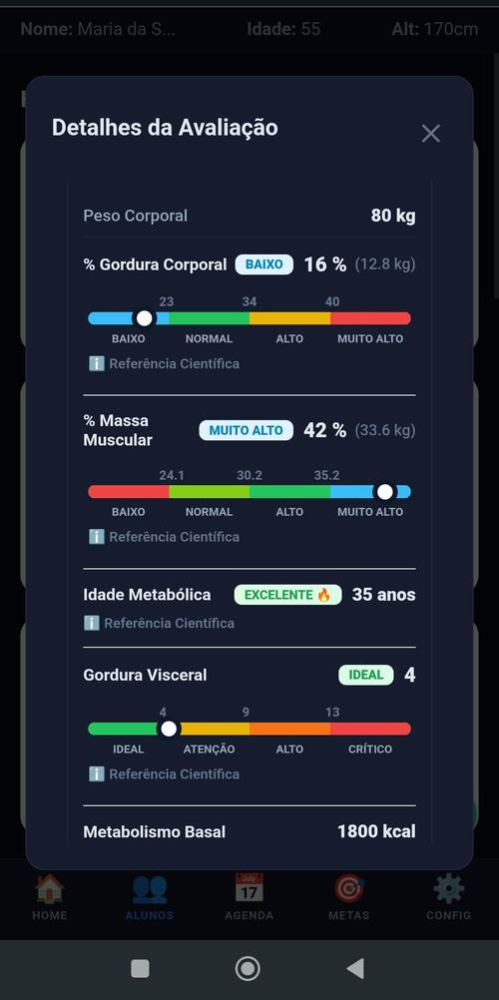
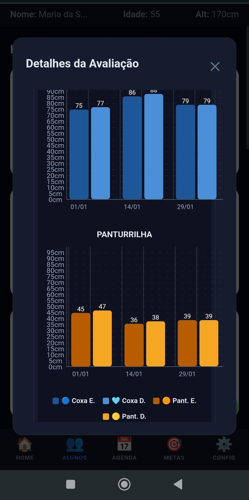
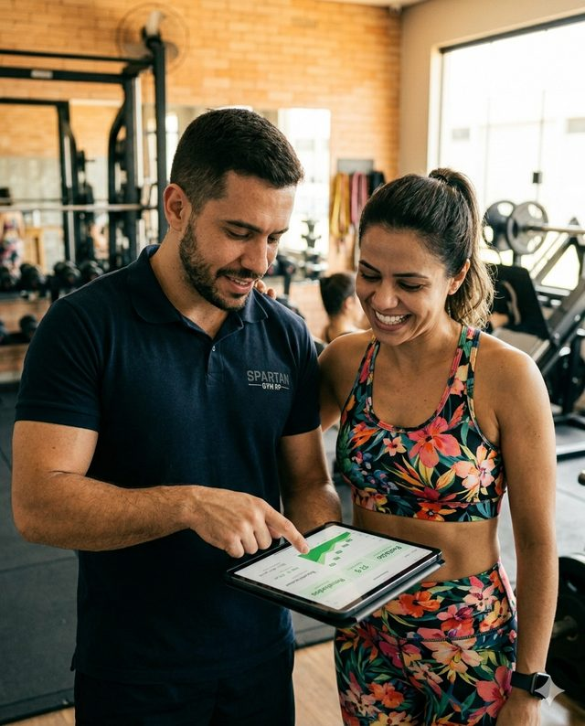

Seu aluno está evoluindo... ...e mesmo assim cancelou?
Você montou o treino.
Você acompanhou.
Você ajustou a estratégia.
Você entregou resultado.
Mas seu aluno não conseguiu enxergar a própria evolução.
E foi embora.
O problema não é falta de resultado.
O problema é falta de percepção de resultado.
O VORTEX PRIMUS transforma evolução em algo que o aluno consegue VER.
Testar Grátis por 7 Dias
A maioria dos alunos não desiste por falta de resultados.
Desiste porque não consegue enxergá-los.
Imagine dois alunos. Os dois perderam 5kg. Os dois reduziram gordura corporal. Os dois melhoraram a composição corporal.
Mas apenas um consegue visualizar claramente essa transformação.
Qual deles vai continuar motivado por mais tempo?
O Vortex foi criado exatamente pra responder essa pergunta.
Pare de entregar números.
Comece a entregar evolução.
O aluno comum não entende protocolos, percentuais, fórmulas ou dobras cutâneas.
- Protocolos
- Percentuais
- Fórmulas
- Dobras cutâneas
- Gordura diminuindo
- Massa muscular aumentando
- Corpo transformando
É isso que gera motivação.
É isso que aumenta retenção.
É isso que faz o aluno continuar.
Qualquer ferramenta registra a avaliação.
O Vortex faz o aluno querer voltar pra fazer a próxima.
E tem uma tela no app que faz exatamente isso — em segundos. ↓
O aluno abre o app.
E vê a própria transformação.
A diferença entre "eu acho que melhorei" e "eu VEJO que melhorei".
Avatar Corporal Inteligente
O avatar evolui automaticamente com base nos resultados reais das avaliações.
Seu aluno deixa de depender só da balança. Agora ele consegue visualizar a própria jornada.
Porque aquilo que pode ser visto também pode ser valorizado.
Cada avaliação se transforma numa experiência completa.
- Avatar que evolui com o corpo — o aluno vê a própria transformação
- Gordura caindo no gráfico — não precisa explicar, ele entende sozinho
- Músculo aumentando em números — prova visual que o treino está funcionando
- Gordura visceral monitorada — mostra risco de saúde real, cria urgência interna
- Idade metabólica — o dado que mais surpreende e engaja o aluno na primeira avaliação
- Circunferências com histórico — o centímetro que sumiu da cintura fica registrado para sempre
- Linha do tempo completa — cada avaliação vira um capítulo da jornada do aluno
- Comparações automáticas — antes e depois sem você precisar montar nada
Cada avaliação vira uma conversa. Não uma planilha.
Veja o que acontece quando o aluno percebe — ou quando não percebe. ↓

Percepção de progresso é o que separa
o aluno que fica do aluno que cancela.
- Treina mais
- Falta menos
- Segue melhor a dieta
- Compartilha conquistas
- Renova mais vezes
- Indica mais pessoas
Ele cancela.
Criado pra recompensar.
Não pra punir.
Seu aluno evolui. Sobe de nível. Recebe reconhecimento. Vê a própria transformação.
A evolução deixa de ser subjetiva.
Ela se torna visível. Mensurável. Motivadora.

Tudo que você precisa pra fazer seu aluno ver a evolução.
- Sua base cresce sem limite — sem pagar mais por aluno*
- Avaliação completa em minutos — sem planilha, sem papel
- Avatar que muda com o corpo — o aluno vê a transformação na hora
- Gráficos automáticos — zero trabalho extra para você
- Aviso de reavaliação automático — nunca mais perca uma data marcada
- Histórico de cada aluno sempre acessível — mostre a evolução em segundos
- Relatório profissional com um clique — impressiona e aumenta o valor percebido
- Sistema Primus — o aluno sobe de nível e quer continuar
- Atualizações contínuas — o app melhora sem você precisar fazer nada
- Funciona em qualquer dispositivo — celular, tablet ou computador
*conforme o plano escolhido
Quanto custa ter tudo isso? Menos do que uma hora do seu trabalho. ↓
Simples assim.
Sem taxa de setup. Sem contrato.
Teste grátis por 7 dias. Cancele quando quiser.
Iniciante
👤 Até 99 alunos ativos
- Avatar de Composição Corporal
- Avaliação física completa
- Gráficos automáticos de evolução
- Compartilhamento via WhatsApp
- Agendamento e aviso de reavaliação
- Aniversariantes do mês
- Fotos Antes e Depois
- Login com Google
- Suporte por WhatsApp
Avançado
👤 Até 299 alunos ativos
- Tudo do plano Iniciante
- Módulo Dieta Fácil
- Calculadora automática de macros
- Aluno monta a própria dieta
- Cadastro de Suplementos
- Avaliação de Força, Resistência e Mobilidade
- Avaliação de alunos a distância
- Balança inteligente via Bluetooth
Escalando 🚀
♾️ Alunos ilimitados
- Tudo do plano Avançado
- Gerador de Dieta por IA (Vortex Nutrition)
- Cardápio semanal com lista de compras
- Metas de negócio com simulação de tendência
Todos os planos incluem 7 dias grátis. Não é necessário cartão de crédito.
O que muda quando o aluno consegue enxergar.
Agora eu consigo ver minha evolução.
Não fazia ideia do quanto eu tinha melhorado.
Isso me motivou a continuar.
Quero chegar no próximo nível.
Essa é a diferença entre mostrar números e mostrar transformação.
Antes de testar,
tire suas dúvidas.
Sim. O app foi projetado pra quem não tem intimidade com tecnologia. A interface é limpa, os gráficos são visuais e o avatar faz o trabalho pesado — o aluno abre e entende na hora o que aconteceu com o corpo dele. Você não precisa explicar nada.
Não precisa instalar nada. O Vortex é um Web App — funciona direto no navegador do celular, tablet ou computador, Android ou iOS. Basta abrir o link e acessar. Sem ocupar memória do celular, sem atualização manual, sem versão desatualizada.
Não. Os 7 dias de teste são 100% gratuitos e não pedem nenhum dado de pagamento. Você cria a conta, usa o app completo e só decide se quer assinar depois — quando já tiver visto o resultado na prática.
A cobrança é mensal, sem contrato de fidelidade. Você assina, usa, e cancela quando quiser — sem multa, sem burocracia. Se cancelar antes do fim do mês, o acesso continua até o último dia pago. E se quiser mudar de plano pra cima ou pra baixo, é só fazer isso direto no painel.
Não. Todo o histórico de avaliações, medidas e progresso fica salvo. Se você voltar depois, está tudo lá exatamente como deixou. Durante o teste de 7 dias, nenhum dado é cobrado nem comprometido — você cancela sem perder nada.
Precisa de conexão pra sincronizar avaliações e visualizar os gráficos em tempo real. Mas qualquer 4G resolve — não exige wi-fi, não trava na hora H da avaliação. Testado em condições reais de academia.
Suporte direto via WhatsApp com o time do Vortex. Sem ticket, sem fila, sem bot. Você fala com quem desenvolveu o produto — a mesma equipe que está na academia todo dia e entende o que você precisa na prática.
Sim. Os dados ficam armazenados no Supabase com criptografia em repouso e em trânsito. Cada treinador acessa apenas os seus alunos. Nenhuma informação é compartilhada ou vendida — nunca.
Criado por um treinador.
Testado dentro de um box real.
Meu nome é Alzejones de Araújo Dias. Sou instrutor de CrossTraining e dono do MyBox Irajá, em Ribeirão Preto — SP.
Criei o Vortex Primus porque vivi esse problema dentro do meu próprio box: alunos evoluindo, mas não conseguindo enxergar essa evolução. E cancelando mesmo assim.
O Vortex nasceu das minhas avaliações reais, com meus alunos reais. Cada funcionalidade foi testada no dia a dia antes de chegar até você.

Seu próximo aluno que iria cancelar
vai ficar. E você vai saber por quê.
- Cadastre seus alunos e faça a primeira avaliação ainda hoje.
- Mostre o avatar corporal — e observe a reação deles.
- Se em 7 dias você não sentir diferença na percepção de valor, cancela. Sem cobrança, sem pergunta.
Cancele quando quiser. Seus dados ficam salvos.